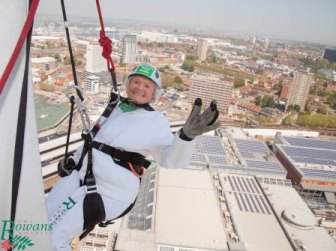

- 2 July 2016 - and 3 July 2016 Spinnaker Tower, Gunwharf Quays, Portsmouth
- for more information phone 023 9223 7142 email fundraising@rowanshospice.co.uk
- Join our Guinness World Record Holder, Doris Long, to abseil down Portsmouth's landmark building.
- Daredevils are wanted to take our Abseil Challenge to brave the 94 metre descent down the iconic Emirates Spinnaker Tower in Portsmouth.
- This event will take place on both the 2nd and 3rd July 2016.
- Over 18's only, open to all who are fit and under 21 stone. If any doubt as to your condition obtain a doctor's certificate.
- Registration costs £50 and you are asked to raise £200 sponsorship.
- You can now register online for our 2016 Abseil.